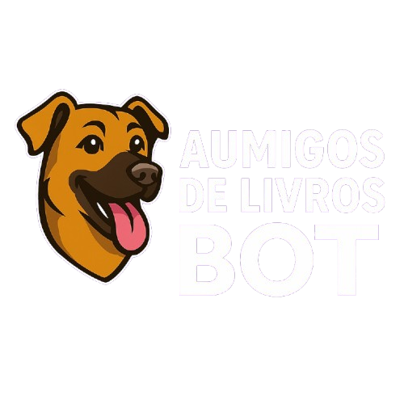
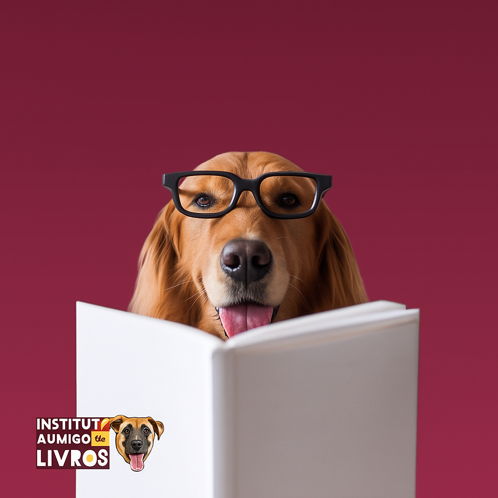
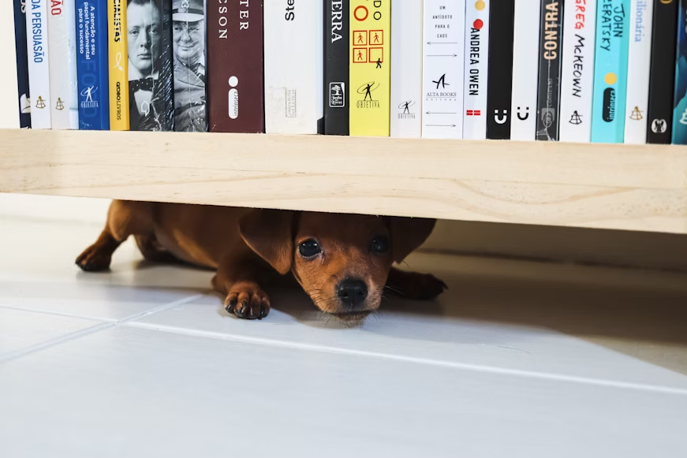
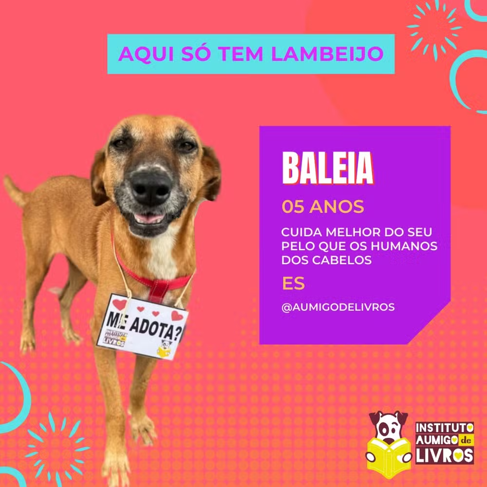

Onde cada página vira esperança
O Instituto foi fundado em 2018 pela Professora Magali Gláucia. A ideia surgiu da necessidade de transformar a frustração com o comércio de animais em um projeto de impacto positivo e real.
Tudo começou com a venda de livros pessoais, que rapidamente escalou para um modelo de sustentabilidade inédito: Livros que salvam Patas.

1. LIVROS DOADOS: A receita vem da venda de livros usados.

2. VENDA: O dinheiro banca tratamentos, ração e veterinário.

3. ADOÇÃO: Campanhas criativas encontram lares amorosos.
Desenvolvido para facilitar o acesso às informações do Instituto, nosso bot no Telegram oferece uma maneira rápida e intuitiva de conhecer os animais disponíveis para adoção, saber como doar livros e acompanhar nossas ações.